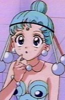

Machiko Toyoshima is a Japanese voice actress. She is affiliated with Aoni Production. She voiced in Kuina in One Piece, Motoko Mihara in Rocket Girls, and Amy in Kirara.
- Gender: Female
- Birthday: December 28, 1971
- Hometown: Ibaraki, Japan

|
|---|
| |
Machiko Toyoshima is a Japanese voice actress. She is affiliated with Aoni Production. She voiced in Kuina in One Piece, Motoko Mihara in Rocket Girls, and Amy in Kirara.
|
|---|
|  | PallaPalla |
|
PallaPalla is one of the members of the Amazoness Quartletwho serves Zirconia. She is the second oldest but acts like a very childish and speaks in the third-person often. She is jealous, childish and has a sadistic side but kind sometimes. She is called the Magician of Balancing Balls and her counterpart is Sailor Mercury. She maybe clever at times but she can dangerous at times as well. |
Go Back to Main Page |
Go Back to Homepage |
|
|
|
OR |
|